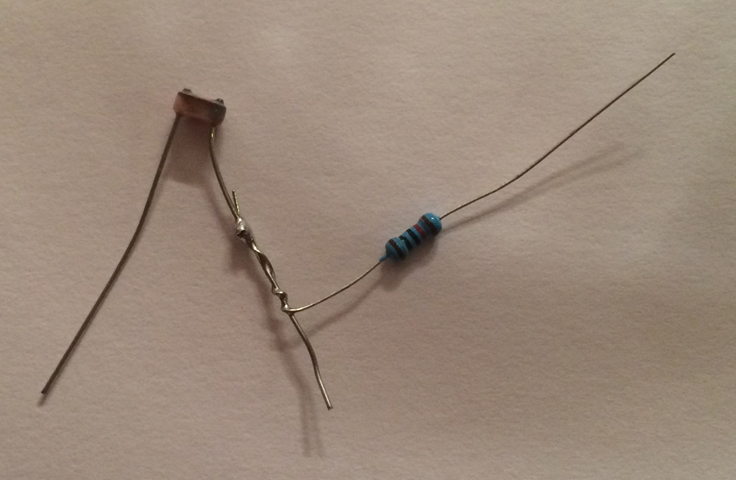
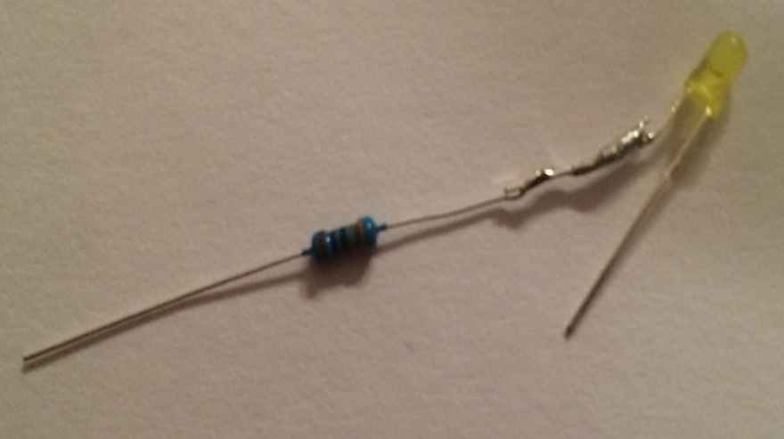

Soutěž v programování – 30. ročník
Krajské kolo 2015/2016
Než výsledek odevzdáte, tak připravte pro hodnotícího návod, jak uvést vaše zařízení do provozu a podle jaké úlohy jste zařízení vytvářeli. Hodnotí se vždy jen poslední, nejsložitější, úloha. Hodnotící nebude do zařízení nic nahrávat. Jen ho zapne a vyhodnotí podle úlohy, na které jste pracovali a kterou jste uvedli v návodu, jak zařízení zapojit.
Příklad návodu pro hodnotící:
Zařízení uvedete do provozu tak, že USB kabel připojíte k počítači nebo nabíječce.
Po zapnutí se spustí aplikace podle úlohy č. 2.
Jak všichni víte, když necháte otevřenou lednici, tak se obsah dřív nebo později zkazí. Vaším úkolem bude vytvořit jednoduché zařízení, které bude hlídat, že je lednice otevřena, a pokud bude otevřena déle než 30 sekund, tak spustí poplach.
Pro detekci otevření lednice máte k dispozici fotorezistor (v zavřené lednici je tma). Fotorezistor mění v závislosti na intenzitě osvětlení svůj vnitřní odpor.

K simulaci poplachu použijeme LED.

Následující úlohy jsou kroky, kterými dojdete k nejvíce bodovanému řešení. Hodnotí se celkový výsledek, ne dílčí úlohy. Můžete tedy začít s nejtěžší úlohou, pokud si troufáte. Vaše zařízení musí fungovat automaticky při připojení napájení bez připojeného počítače. Představte si, že zařízení musí jít rovnou umístit do lednice. Hodnotí se funkčnost zařízení ne programový kód.